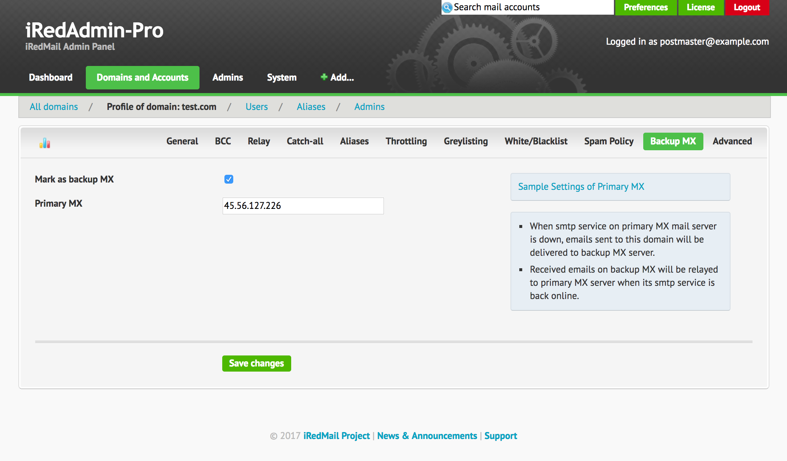

This tutorial describes how to mark a mail domain as a backup MX.
When smtp service on primary MX server is down, emails will be delivered to backup MX server. When backup MX server detects smtp service on primary MX is back online, it will relay received emails to primary MX.
To let other mail servers know your server is the backup MX server of this mail domain, you must add your mail server info in its MX type DNS record.
For example, main mail server of your mail domain example.com is
mx01.example.com, to set your iRedMail server mx02.example.com as backup
MX of example.com, you need to add mx02.example.com as your lower priority
mail server in MX type DNS record.
example.com. 3600 IN MX 5 mx01.example.com
example.com. 3600 IN MX 10 mx02.example.com
Server mx01.example.com has priority number 5, and mx02.example.com has
priority number 10. For mail service, the lowest number has highest priority.
so with above example, server mx01.example.com is the primary MX, and
mx02.example.com is a backup MX.
When mail service on mx01.example.com is down, other mail services will
connect to mx02.example.com.
It's easy to manage domain profile With iRedAdmin-Pro, including backup MX setting.
Go to domain profile page, click tab Backup MX:

Primary server address
You should set the IP address of primary MX as relay server to avoid mail loop.
SQL commands (we use MySQL for example):
USE vmail;
UPDATE domain SET transport='relay:[45.56.127.226]:25',backupmx=1 WHERE domain='example.com';
In above example, we mark domain example.com as a backup MX, and use IP
address 45.56.127.226 as primary MX server, you should replace it by the real
IP address.
In domain object, please add LDAP attribute/value pair like below:
domainBackupMX: yes
mtaTransport: relay:[45.56.127.226]:25